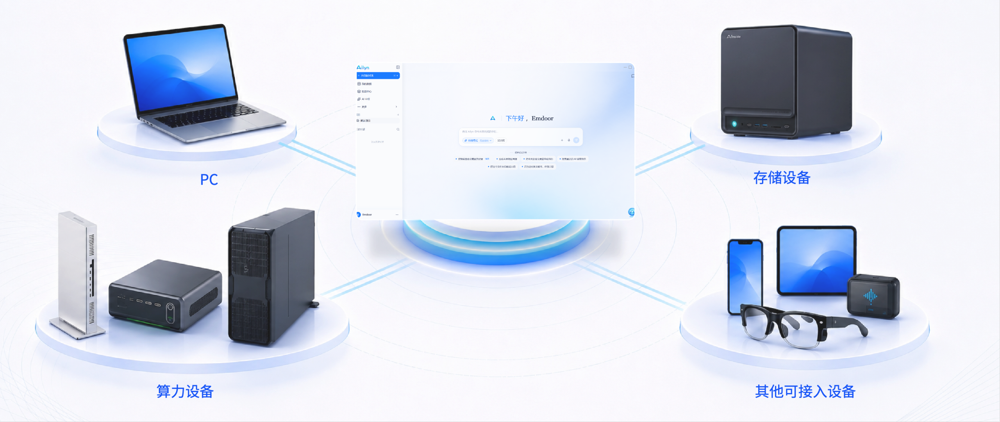
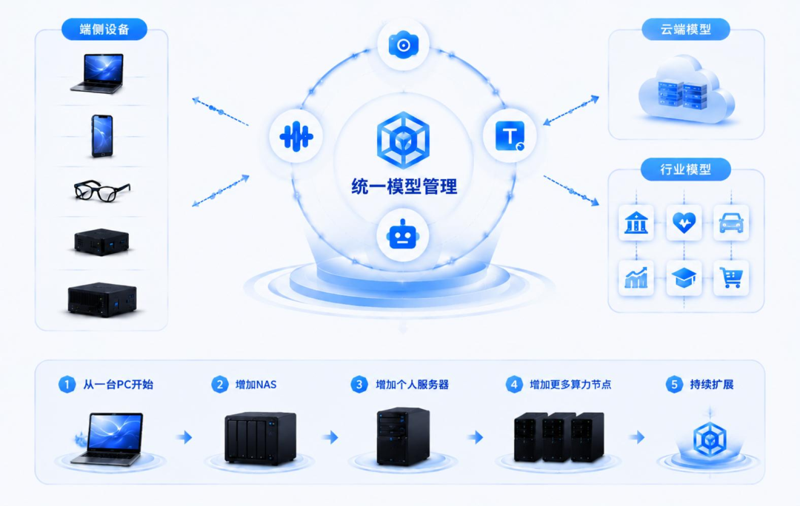

AILYN / MULTI-DEVICE INTELLIGENCE
亿灵 Ailyn
连接设备，让 AI 走向执行。
针对数据分散于设备、云端 AI 的隐私与成本问题，亿灵以“端侧优先、多端协同”为核心，整合 PC、NAS 等设备的模型、算力与数据能力，构建支持自然语言任务理解、流程拆解与工具调用的 AI 智能中枢，实现跨设备的任务执行与结果交付。
- 端侧优先
- 多端互联
- 端云协同
01 CONNECTED WORKSPACE
一个入口，连接多端资源
从 PC、算力设备到存储设备，设备工作台将不同类型的资源放在同一个入口。让分散的设备成为理解多端协同的起点。

02 BEYOND CONVERSATION
从对话入口，
走向任务协同
产品视觉展示
让自然语言成为人与设备之间的连接方式。亿灵围绕数据、模型与设备组织产品体验，探索从提出需求到协同执行的更短路径。
03 LOCAL-FIRST COLLABORATION
让任务，更靠近本地数据
NAS 承载数据，AI Server 提供算力，文档处理、数据分析与内容生成在本地协同场景中展开。以端侧优先为出发点，让身边的设备和数据参与任务处理，并按任务需要结合云端能力。
04 CONNECT WITH CONTROL
多端互联，也有统一边界
连接概念
设备相连之外，还需要清晰的访问与调用边界。这张概念图以多端连接为基础，呈现统一治理与安全授权的产品思路。
05 A SYSTEM THAT GROWS
从一台 PC，扩展到更多可能
产品扩展构想
从一台 PC 出发，逐步加入个人服务器、NAS 与更多算力节点。配合统一模型管理，这一构想描绘了资源随需求扩展的协同网络。
